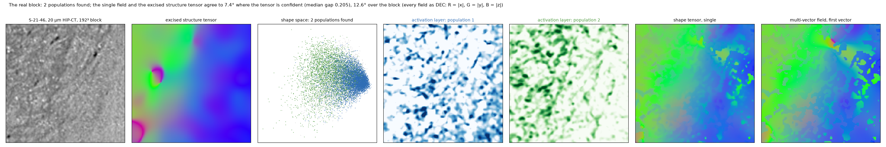
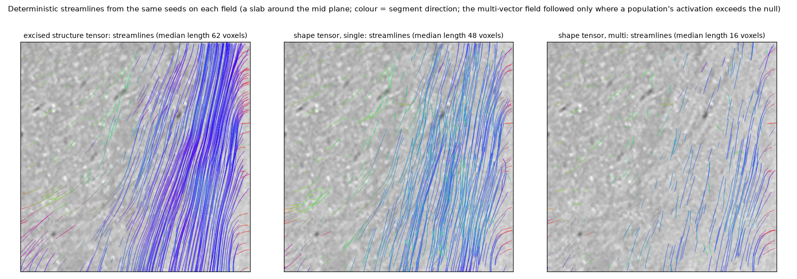
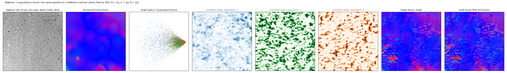

Real data¶
Two volumes are used throughout: a HiP-CT crop of human white matter at 20 µm, and a BigBrain volume of interest at 20 µm. On real data there is no truth; what is shown is the agreement between the fields, their behaviour at the structures the phantoms model (interfaces, crossings), and the streamlines they give.
HiP-CT (S-21-46, 20 µm)¶
A 768³ crop of a dehydrated human brain imaged by hierarchical phase-contrast tomography: white matter is bright,
fibres darken it, the grey/white boundary and vessels are steps of 40–70 grey levels. The phantoms' texture
(fibre density, widths, darkening, noise, dispersion) is matched to this crop (shapetensor stats).

The same columns as every figure in the package: the image, the excised structure tensor, the shape space with the populations found in it, their activation layers, the single field and the first vector of the multi-vector field. The block's own structure tensor is the pipeline's teacher: calibrated on the 384³ around the block, the readout covers 18 of 24 orientation bins and two populations are found. The single field and the excised structure tensor agree to 7° where the tensor is confident (the top quarter by gap; 92% of those voxels within 15°) and to 13° over the whole block, which is low-coherence tissue (median gap 0.2) — the activation weights are what tells a consumer which voxels to trust. The population count on this block is sensitive to the detection settings (parameters): the two readings of the tissue differ by 8° at the median.

BigBrain (20 µm)¶
A 768³ volume of interest from the BigBrain histological reconstruction (a cell-body stain), resampled to 20 µm:
white matter is dark and nearly featureless at this stain, so it is the harder case for any gradient-based
estimate and a test of the engine on a different contrast; the pipeline reads three populations in it, which
with no truth is a statement about the shape space of this stain, not about fibres. scripts/bigbrain_fetch.py
downloads it.

Other scales, other regions, a whole brain¶
Scales and regions: the same pipeline on HiP-CT from 2.2 µm to 200 µm voxels, on four regions of S-21-46 at 20 µm, and over a whole brain at 100 µm.
Anisotropic voxels¶
Both the structure tensor and the pipeline take spacing=(dz, dy, dx); the shape engine resamples the block to
isotropic voxels internally. On 20 × 20 × 50 µm data, fibres that run perpendicular to the coarse axis lose their
across-fibre contrast in the sampling itself, and no filtering recovers it; sample isotropically at the texture
scale where you can.